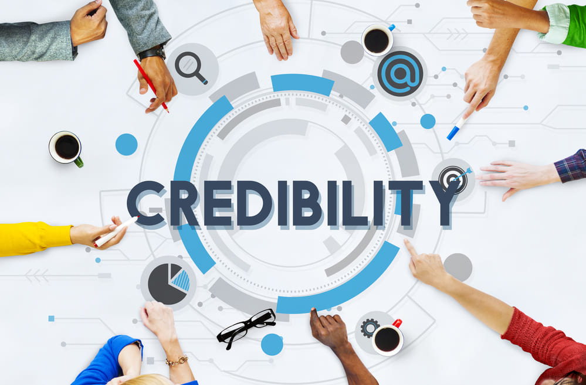

6. Dec, 2020
If you're running an online counselling blog, you've opened a big opportunity to attract new customers through your website. But to get those clients, you'll need people to visit your site first. And they'll only be able to visit your site if they can find it in the search results more often - and that's where SEO (search engine optimization) comes in.
SEO services for online counselling are essential to give your brand a larger platform and opportunities to work and enrich the lives of far more clients. In this article, we'll list the key benefits of SEO to help you understand how to reinforce your blog strategy for success.
1. Organic Traffic Growth

If you need something, odds are you'll try finding it through a search engine like Google. Organic traffic is when people visit your business because it turns up in their search results naturally.
There are a lot of SEO tricks to increase traffic. For starters, writing and publishing content is only half the battle. Researching and including the keywords commonly associated with your topic will help the article appear more often when people search using the keyword.
A search engine also ranks pages higher if you fill up its title tag, as well as meta tags such as name and description.
SEO Meta Tags
Here's a run-down of the most important meta tags to boost your counselling blog's SEO.
Title: The big text that links to your page, as well as the text in the page tab.
Meta description: Displayed below your title in the search results.
Robots meta tag: Sets options for whether a search engine indexes your page or not.
Canonical link tag: Tells the search engine to index your page as the main version if multiple page versions also exist.
Alternative text image tag: This tag is used to describe images to users and the search engine if images don't load.
Open graph meta tags and Twitter cards: A description of your page that improves integration with Google, Facebook, LinkedIn and other social media.
Header tags: Organizes the information on a page. Don't forget to use this!
Responsive design meta tag: Allows your website to change its scaling and fit better with a device's resolution.
Unlike with creating ads for your business, you can naturally make your site's blog posts more relevant on Google with SEO services that can properly optimize your meta tags for you.
2. Brand Recognition
Having your blog listed highly in the search results consequently means that it will be seen more often by potential clients who are researching on their choices for counselling.
The more they search, the more your name will show up and become ingrained in their choosing process.
3. Higher Credibility

Another benefit if your blog is listed highly on Google searches for online counselling services is that it creates a better impression for your blog's visitors. Better search results will present your business as a competent and trusted choice for therapy online.
Meta descriptions are part of a blog's presentation. A site that fails to follow good SEO practices will seem incompetent and reflect on one's services. Good content can even look bad if it's poorly presented.
Conversely, you can create eye-catching titles and meta descriptions, alt-text your images, use headers, and experiment with responsive site layouts.
You can use this credibility to further establish yourself as a key player in the counselling scene. Aim for publishing articles, blog posts or newsletters that can be trusted sources of information that people will love to follow.
Credibility also attracts the attention of other blog sites, which may let you publish guest posts on their blog and crosslink between your sites. Search engines treat your site as more valuable if a lot of other websites link to it.
4. Social Media Presence
Good SEO services are highly aware of the synergy between SEO and social media.
Simply put, a site with a high search result standing will attract more exposure to the social media accounts to which it is linked. And at the same time, your social media will also turn in more visitors to your site due to sharing links and the same keywords.
SEO and smart social media use will allow you to advertise your counselling services on different platforms, coordinate announcements for blog posts and update, and respond to inquiries conveniently.
5. Long-Term Impact
People are getting used to facing their screens every day for work, school, business or recreation, gradually changing the nature of how we regularly interact with one another. On top of the stresses associated with the pandemic and daily problems, never has there been a better time to strengthen one's support system.
And for many people, it's becoming an easier and more attractive choice to find counselling help on the Web rather than through face to face appointments. Online therapists are safer, more flexible, and more responsive than a physical meeting as health concerns still abound.
SEO services for counselling can help your site stay relevant and competitive as more and more therapists migrate to the Internet to promote themselves. Strategically speaking, you can use SEO to encourage an upward spiral of increasing your search engine rank and attracting customers, further boosting your search traffic.
Conclusion
As a counsellor, building an online presence is a crucial step to adapt to an increasingly isolated and socially-distanced clientele. By running a blog for counselling services, a therapist can quickly meet and communicate with their patients and schedule appointments.
With the smart use of SEO services in promoting one's online counselling work, a counsellor can draw in more organic traffic that's likely to engage with your content.
The proper use of the tools in your SEO arsenals, such as meta tags, keywords, and crosslinking with your social media and other sites, can make your online counselling brand recognizable and prestigious, convincing people who glance at your links to check your offerings.
As part of a long-term strategy, there's never been a better time to use SEO services in carving out your own niche in the online counselling market. Excellent search results and organic growth is vital for your site, both in terms of longevity and future opportunities.
Don't squander the potential of your online counselling website. If you want to earn a position as one of the Internet's pre-eminent offerings for online therapy, you'll need the best SEO services at your side.